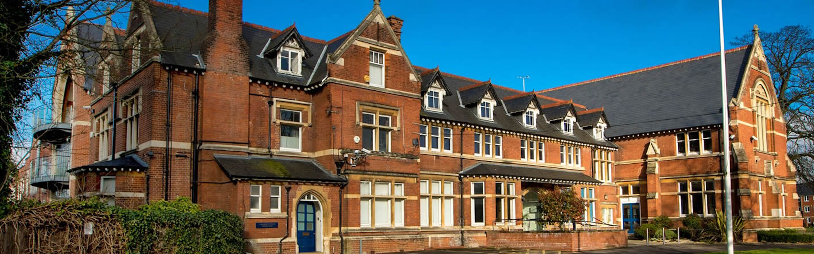

Secondary Education
For my formative years, I studied at King Edward VI Grammar School in Chelmsford, Essex. This spanned from 2015 all the way to 2022, and was simply the best time of my life. I made many friends, and I was able to learn a lot about myself and the world around me. I was able to study a wide range of subjects, including Computer Science, as well as finding a passion for other subjects, ranging from Economics to Physics to Latin!
Pre-GCSE
My life in Computer Science started right from the beginning of secondary school. Having been shown an interesting programming language called Scratch, I was hooked! I spent many hours at home creating games and animations, and even won a few awards for my work. This led to us learning about BBC Microbits, a funny little device that let you write code in a language I had never seen called 'Python'. To me, this was a totally new challenge. I was only used to the world of drag-and-drop programming, so the ability to just write whatever I wanted was daunting, but exciting. I spent many hours at home learning the basics of Python, and even started to create my own projects.
This led me down the weird and wonderful world of programming! For the first time, I felt the power to truly create whatever I wanted, be it a function to add up the first 100 numbers just because I wanted to, or a program to automatically send emails to my friends. This is the moment in my life that I consider my mini renaissance of discovery. I was learning new things every day, and I loved it! I was even able to use my new-found knowledge to help my friends with their own projects, and I even started to teach some of my friends how to code.
GCSE
For GCSE I took the OCR exam board. This GCSE is engaging and practical, and encourages creativity and problem solving. It encourages students to develop their understanding and application of the core concepts in computer science. Students also analyse problems in computational terms and devise creative solutions by designing, writing, testing and evaluating programs.
I was able to learn about the fundamentals of programming, as well as the more advanced topics, such as data structures and algorithms. I was able to learn about the different types of programming languages, and how they are used in the real world. I was also able to learn about the different types of hardware, and how they work together to create a computer. Finally, I was able to learn about the different types of software, and how they are used in the real world.
During these years, I participated, and eventually taught, Python club, which was a programming club for students, whether or not they were taking Computer Science, to learn the fundamentals of not only Python, but how to program in general. I was able to teach many students, and I was able to help them with their own projects. I was also able to learn about the fundamentals of teaching, and how to teach a wide range of students, from those who had never programmed before, to those who were already experienced programmers.
GCSE Results
Fast forward to the end of my GCSE years, I received a grade 9, which is the equivalent to an A*, as well as A's and A*'s in my other subjects. I was very proud of my achievements, and I was ready to move on to the next stage of my education.
A-Level
For the first time in my academic career, I was now able to choose what I wanted to study and only what I wanted to study. I studied Computer Science, Design & Technology and Economics. As a software developer, I'm sure the reader is most likely to read this section on Computer Science, however I urge the reader to read my sections on my other studies, as these heavily impacted my academic decisions, and I believe they are just as important as my Computer Science studies.
Computer Science
My Computer Science A-Level was also OCR, but included topics of much more depth, such as Software and Software Development, which is where you might think I got my first taste of passion for software development. However, this is not the case. Whilst I enjoyed learning about the different types of methodologies, learning and writing about these was never as interesting as actually implementing them, and so it was in fact the Programming Project that I enjoyed the most. My project was a mix between John Conway's Game of Life, and a small-known global event known as COVID-19. My project was a simulation of a virus spreading through a population, which was created in Java using a Object-oriented approach. This taught me so much more about the fundamentals of software developement than any other part of the course. I was able to learn about the importance of planning, testing and implementation, as well as the importance of documentation and commenting, as well as the the importance of creating a user-friendly interface, and how to do this effectively.
Design & Technology
Despite not taking Design & Technology at GCSE, my newfound love for all things technology led me to challenge myself and take this subject at A-Level. Learning about the stages that go into creating a product, from the initial design, to the manufacturing, to the testing, and many more, was fascinating to me. Using different software, such as CAD to help aid my design choices, as well as learning about the different types of materials, and how they are used in the real world, was super interesting and offered a different outlook on the world of design choices not touched by the Computer Science A-Level. My project was creating a chessboard, chess clock and chess pieces, which was a very challenging project, but one that I thoroughly enjoyed.
Economics
Unlike my reason for taking Computer Science, Economics was a subject that I hadn't entirely enjoyed at GCSE. Up to this point, I found the whole thing about demand curves and supply curves, elasticities and evaluations, truthfully boring. Although this was not mirrored in my GCSE result of an 8, which is considered, as is a 9, equivalent to an A* grade, I found my teachers to be strict and rude, and the content to be boring. Why take this subject? This was a question that I attempted to wrap my head around for months and months at the start of Year 12. Why not Physics? Why not even Art!? I had always struggled with essay subjects, and now I was stuck in a position where 1/3 of my academic success will now be measured by how well I can write an Economics essay! One day, whilst I was asking myself this question, rather than sitting in a state of self-pity, I decided to think - why is it that I find non-essay subjects so much easier? And that was when it finally hit me - patterns! My brain is better at understanding and detecting patterns, which is why programming came so naturally to me. On the other hand, essay subjects require a lot more creative thinking, which was something I struggle with often. So what I decided to do was I began to devise a formula, which I could follow and implement into my essays in Economics. Although this turned writing essays into a boring, monotonous task, this was what was necessary to get through multiple essays in the exam. Although my teacher became bored of marking essay after essay which followed the same structure, luckily the examiner marking my paper would only have to do so once, and therefore I could implement this formula to speed up my essay writing and reduce my stress!
If I abstract away how I write sentence-by-sentence, the general setup of my essays was rather simple. Introduction, Paragraph 1 (Analysis & Evaluation of strongest point), Paragraph 2 (Analysis), Paragraph 3 (Evaluation), Paragraph 4 (Analysis), Conclusion (includes its own evalutative point).
My teacher was not happy with the fact that my essay didn't clearly have 3 analysis and 3 evaluation paragraphs. She felt that because this went against what every other student did, it would make me stand out in a negative way. However, after doing extensive research into past paper and examiner notes, I was confident in my own research and decided to try and pull it off - I risked my entire A-Level in Economics implementing an essay approach that went against the grain, and could land me with a seriously poor grade.
As a result, I began to enjoy the subject more. I found essays quicker and easier to write, which allowed me to focus more time and energy on revising the theory and learning new real world examples that I could implement into my essays later down the line. Out of all my A-Level experiences, I would say this was the greatest life lesson for me - sometimes you need to have faith in your ability and trust your judgement - it doesn't always work out, but when it does, you can happily say that you built that success for yourself, rather that riding on the coattails of someone else's decision making. Succeed or fail, you only have yourself to blame (and congratulate!).
A-Level Results
As a result of my hard work and determination, I was rewarded with A* grades in all of my subjects. This was a notable achievement for me, and was a great way to end my time at the school and I had been at for 7 years of my life!